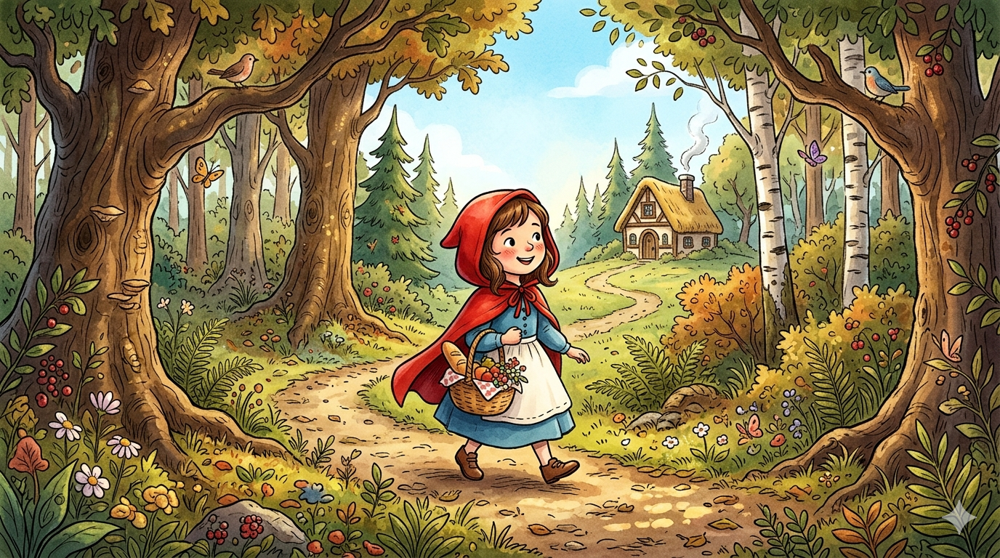

Caperucita Roja

La niña del bosque
Había una vez, en la linde de un bosque frondoso, una niña tan dulce y querida que todos la llamaban Caperucita Roja, pues su abuela le había regalado una caperuza de ese color que ella llevaba puesta a todas horas. Vivía con su madre en una casita junto al molino, y no había en toda la aldea criatura más alegre ni más obediente.
Un día de primavera, su madre preparó una cesta con pan recién horneado, un tarro de miel y una botella de vino dulce.
—Caperucita —le dijo—, tu abuela está enferma y vive sola al otro lado del bosque. Llévale esta cesta, pero ve con cuidado: no te entretengas por el camino ni te apartes del sendero.
—Así lo haré, madre —respondió la niña, besándola en la mejilla.
Y con la cesta en el brazo, partió hacia el bosque, canturreando entre los árboles que comenzaban a despertar con el calor de la mañana.
El encuentro con el lobo
No había avanzado mucho cuando, entre la maleza, apareció un lobo de pelaje gris y ojos brillantes. El animal, astuto y hambriento, se acercó a ella con un aire amable que no engañaba a nadie más que a una niña de corazón confiado.
—Buenos días, pequeña —dijo el lobo con voz suave—. ¿Adónde vas tan temprano y tan sola?
—Voy a casa de mi abuela, que vive enferma al otro lado del bosque, junto a los tres robles —respondió Caperucita, sin sospechar nada.
El lobo sonrió, mostrando unos dientes que la niña no supo interpretar.
—Es un camino largo —dijo—. ¿Por qué no recoges algunas flores para ella? Seguro que le alegrarían el día.
A Caperucita le pareció una idea encantadora, y se desvió del sendero para buscar las flores más bonitas que pudiera encontrar. Mientras tanto, el lobo, con paso veloz y silencioso, corrió campo a través hacia la casa de la abuela.
La casa de la abuela
El lobo llegó antes que la niña y llamó a la puerta con dos golpes secos.
—¿Quién es? —preguntó la abuela desde su cama.
—Soy Caperucita, abuela —dijo el lobo, imitando lo mejor que pudo la voz dulce de la niña—. Te traigo pan, miel y vino.
—Tira de la cuerda y la puerta se abrirá —respondió la anciana.
Apenas entró, el lobo se abalanzó sobre ella y, sin darle tiempo a gritar, la encerró en el armario más grande de la habitación. Después se puso el gorro de dormir de la abuela, se metió en la cama y corrió las cortinas, esperando con paciencia a que llegara la niña.
Caperucita llega a casa
Cuando por fin Caperucita llegó con su ramo de flores y su cesta, encontró la puerta entreabierta, lo cual le pareció extraño, pues su abuela siempre la mantenía bien cerrada.
—¿Eres tú, Caperucita? Pasa, pasa, hija mía —dijo una voz desde el fondo de la habitación, apenas la niña puso un pie dentro.
Caperucita se acercó despacio a la cama, donde una figura cubierta hasta la nariz parecía dormitar, y dejó la cesta sobre la mesa.
—Abuela, te he traído pan, miel y vino —dijo, sin dejar de mirar aquella figura—. Pero qué voz tan rara tienes hoy.
—Es que tengo un poco de resfriado, hija mía —respondió el lobo, esforzándose por suavizar su voz—. Acércate más, que te vea bien.
Caperucita se acercó, y al hacerlo no pudo dejar de notar algunos detalles que le resultaban inquietantes.
El engaño se desvela
Caperucita se sentó en el borde de la cama, aunque algo en su interior le decía que no debía quedarse mucho rato. La luz que entraba por la ventana apenas iluminaba el rostro de su abuela, oculto entre las sombras del gorro de dormir, y la niña, con la curiosidad propia de su edad, fue acercándose poco a poco.
—Abuela, qué orejas tan grandes tienes —dijo, observando con atención.
—Son para oírte mejor, hija mía —respondió el lobo, procurando que su voz sonara tierna.
La niña asintió, aunque frunció ligeramente el ceño, como quien guarda una duda sin saber bien qué hacer con ella. Se inclinó un poco más, y entonces repararon en algo que la sorprendió todavía más.
—Abuela, qué ojos tan grandes tienes.
—Son para verte mejor, pequeña.
A cada respuesta, el corazón de Caperucita latía un poco más rápido, aunque ella misma no sabría explicar por qué. El lobo, mientras tanto, permanecía inmóvil bajo las mantas, conteniendo su impaciencia, calculando el momento justo para saltar.
—Abuela, qué manos tan grandes tienes —dijo la niña, retrocediendo apenas un paso.
—Son para abrazarte mejor —contestó el lobo, sacando una zarpa peluda de entre las sábanas.
Fue entonces, al ver aquella mano cubierta de pelo gris, cuando Caperucita comprendió de golpe que algo terrible estaba ocurriendo. Quiso correr hacia la puerta, pero el miedo le clavó los pies al suelo, y solo le quedó fuerza para una última pregunta, casi un susurro.
—Pero abuela... ¡qué dientes tan grandes tienes!
—¡Son para comerte mejor! —exclamó el lobo, y de un salto se lanzó sobre ella, apartando las mantas de un solo movimiento.
Caperucita, presa del terror, lanzó un grito tan fuerte que resonó por toda la casa y se extendió hasta el bosque vecino, donde las aves levantaron el vuelo asustadas por aquel eco desgarrador.